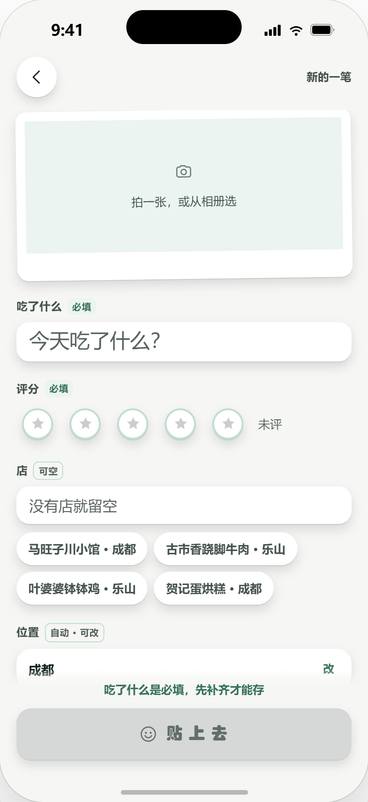
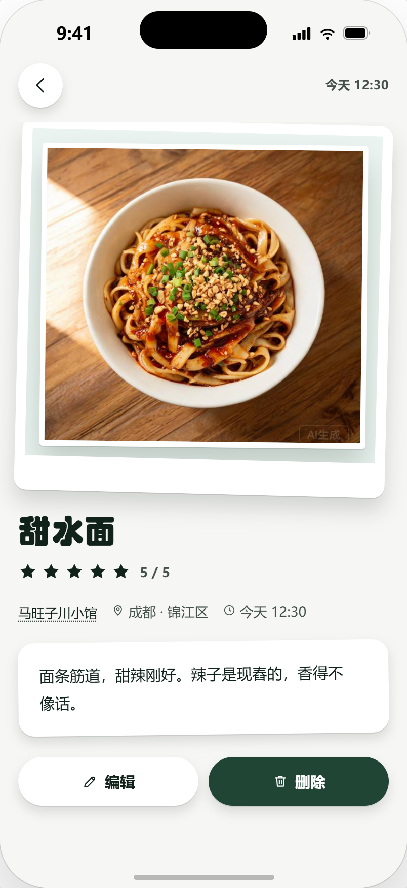
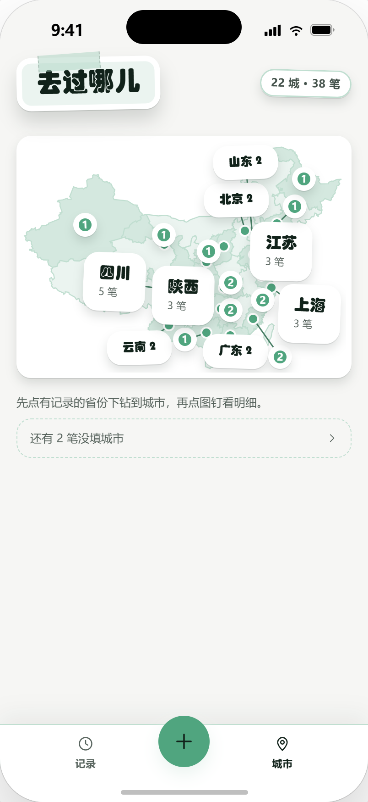
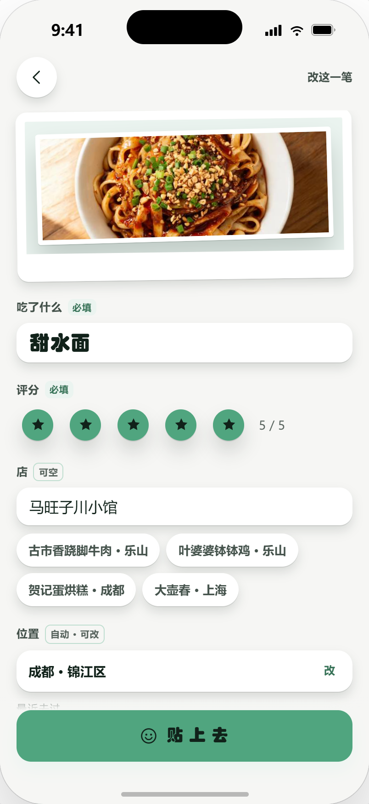

拍一张、写菜名、点星星 —— 其余的交给它。

每一笔点进去，是完整的一顿饭。

一枚图钉，是一座真去过、真吃过、真记过账的城市。
抹茶绿的贴纸语言贯穿始终：日期是圆贴、按钮是胶囊、卡片带模切白边。

不靠服务器，不靠账号，打开就能用。
按月归组，月份签标着这一月贴了几笔，点一下收起。搜索或筛选时自动全展开，藏起来的记录不会漏。
想看字就用列表，想看照片就切宫格。没照片的记录用图形加菜名占位，不会留出空白槽。
菜名、店、城市、区县、短评全能搜；星级 chips 一筛，只剩 4 星以上的那些 —— 头上的统计不跟着变。
全国 34 省 · 394 市 · 2946 区县固化在本地，推进式选择器选完即关；城市参与地图聚合，区县只管显示与搜索。
记录与照片都留在微信本地存储，不上传、不同步、不需要注册。清空数据可看空态，示例数据随时重置。
照片按记录存放，1400px 内压缩落盘；一格记录最多 5 张，堆叠张数角标常驻，不用点开才知道还有几张。